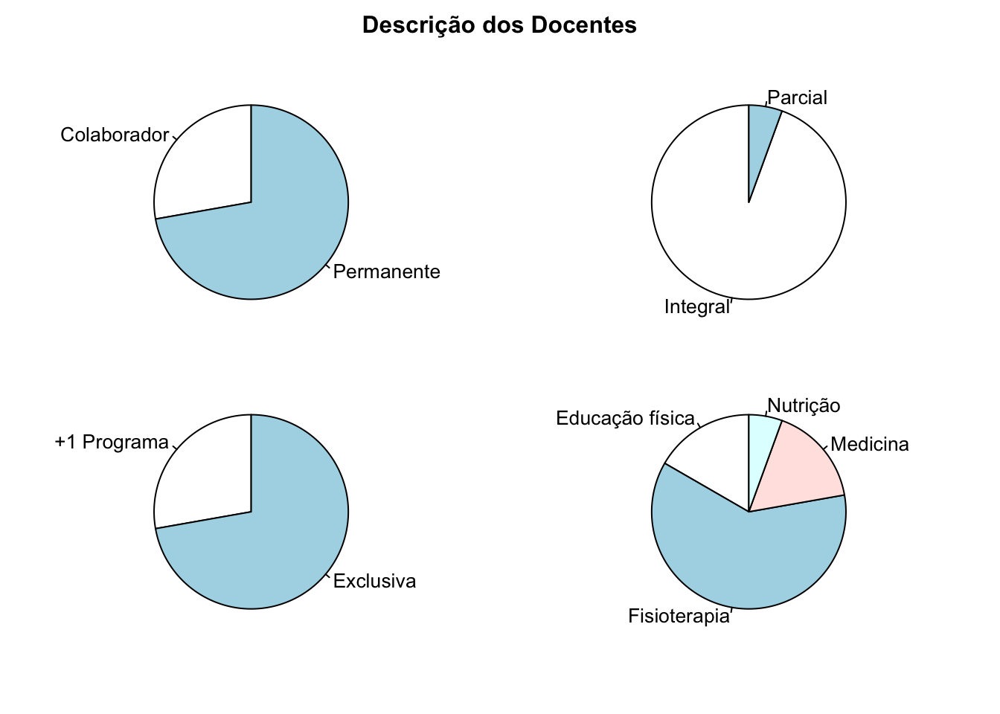
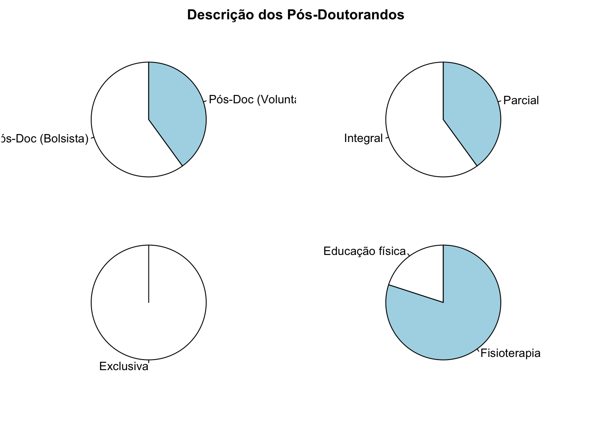

| País | Nome | Categoria (ano) | Lates ID | ORCID | Scopus Author ID | ResearcherID |
|---|---|---|---|---|---|---|
| 🇸🇦 | Jaya Shanker Tedla | Pós-Doc (Voluntário) (2019-2020) | - | 0000-0002-2876-4227 | 24448748000 | ABG-8394-2020 |
| 🇧🇷 | Ney Armando de Mello Meziat Filho | Pós-Doc (Bolsista) (2014-2015) | 8950578636133031 | 0000-0003-2794-7299 | 25646653100 | H-4349-2016 |
| 🇸🇦 | Ravi Shankar Reddy | Pós-Doc (Voluntário) (2019-2020) | - | 0000-0001-6638-0585 | 55340165100 | I-1893-2019 |
| 🇧🇷 | Renato Santos de Almeida | Pós-Doc (Bolsista) (2017-2020) | 1829536275567695 | 0000-0003-2148-334X | 55859431400 | AAB-4867-2019 |
| 🇧🇷 | Thiago Lemos de Carvalho | Pós-Doc (Bolsista) (2013-2014) | 2047525646037395 | 0000-0002-6657-5689 | 8872259200 | Q-9518-2017 |

Copyright © 2021 Arthur de Sá Ferreira, PhD, em nome do colegiado do PPGCR-UNISUAM. Todos os direitos reservados. Última atualização em 13 Maio 2021.
Arthur de Sá Ferreira is creating websites for sharing science & art.
If you enjoyed this content you can buy me a ☕ coffee!